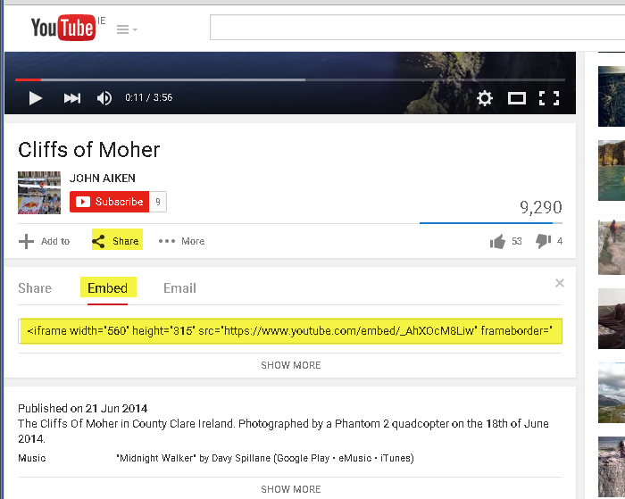
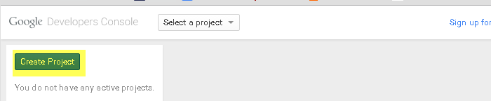

gtm2-youtube-event-tracking
YouTube Event Tracking in Google Analytics for non-developers
Project maintained by grantmarch Hosted on GitHub Pages — Theme by mattgraham
Target Audience
This tutorial is primarily aimed at non developers and describes how the code can be used in Google Tag Manager to generate YouTube events for Google Analytics (GA). A developer is required, however, to enable pages for Google Tag Manager (GTM). This can be done instead of enabling pages for GA. Developer details are included for completeness.
Goal
Here is a 1:10 minute video showing the goal of being able log YouTube events, eg. play, pause, in Google Analytics.
Overview
Google Analytics
A small bit of Javascript can be placed on a page to allow Google Analytics (GA) (www.google.ie/analytics) to track the page. We will only be using the Tracking Id from this code here.
Google Tag Manager
Google have created Google Tag Manager (GTM) (www.google.ie/tagmanager) as an accompaniment to GA which allows non developers to be better able control what GA monitors without having to continuously request assistance from a developer. A small piece of Javascript code must be added to each page using GTM just as you would do for Google Analytics.
This tutorial specifically focuses on monitoring Youtube video events such as playing, paused, stopped, buffering, etc. But it is obviously possible to monitor other events, for example it is possible to monitor clicks on tabs on a page that load ajax content onto the same page.
Custom Javascript
In addition to the GTM code above, a non-developer can add some custom code (by just cutting and pasting) that listens for YouTube events. This code then passes the events to a concept called the "data layer". GTM manager can "read" these events in the data layer and, in turn, pass them on to GA to monitor. This code has been tested with Chrome. Please report how it works for other browsers - some changes may be necessary.
Google Developer's Console
We will also use the Google Developer's Console (console.developers.google.com). This is not required for our event tracking as Youtube videos are tracked by their video id, eg. https://www.youtube.com/watch?v=_AhXOcM8Liw. If you click the Youtube link, you'll see that the title of this video is "Cliffs of Moher".
We can use some of Google's Youtube Data API v3 to get the title corresponding to this video id. This means that the resulting events can be recorded in GA using the more meaningful title as opposed to the obscure video id. For security and monitoring purposes we have to request access to Google's APIs and we do this using the Google Developer's Console.
Developer vs non developer
If a Youtube video is to be embedded on a page, the web developer will be doing that anyway. The GTM code has to be put on pages to monitor events (and more) instead of the GA code. After that, everything else can be done by a non developer.
Developer Required Tasks
Finding Embed Code for YouTube Video
Looking at the previous Youtube video of the Cliffs of Moher, click Share < Embed and cut and paste the provided code into your web page.
Web Page with Two Embedded YouTube Videos
Enable GTM on this Page
We need to get the GTM code to put on the web page. It is suggested developers should do this as a matter of course - just as they would have done for the GA code fragment they will have used before
Create GTM Account and a Container
Login to www.google.ie/tagmanager and create an account. A container is used to hold one website domain that you are managing.

Add GTM Javascript Code to your Web Page
You will be directed to the GTM Javascript snippet that has to be added to your web page.

Your web page should now look something like this
The GTM Dashboard
The GTM should be displaying its dashboard. Note that you are "in" the Container tab and you have the container you defined earlier, namely - www.
Finding your GTM Code Snippet Again
If you need to find the GTM code again, to add to a different page for example, go to Admin < Install Google Tag Manager. This doesn't actually "install" anything - it just shows you the GTM Javascript code again.

Non Developer Tasks
GTM Dashboard Again
In GTM we will primarily use 3 concepts - Variables, Triggers and Tags.
Consider Variables to be containers that can hold a value. Triggers send out a message that other parts of GTM can act upon. Tags (nothing to do with HTML tags) are units that carry out specific functionality. This will become more clear as this example is developed.
Non Developer Task Summary
At this stage, our developers should have set up the page with YouTube videos to be able to "talk" to GTM. Now a non-developer can decide which pages should be monitored for YouTube events. This is a summary of the process involved.
- Get YouTueb API key
- Create a variable in GTM, YouTubeApiKeyVar, to hold our api key for the YouTube Data v3 api. This variable is used by our custom Javascript which we will add later. This allows our Javascript to use the YouTube Data API v3 to get the video titles corresponding to video ids.
- Get GA Tracking Id
- Create a variable, GATrackingIdVar, which holds the Google Analytics Tracking Id which is got from our GA account. This allows GTM to send event data to GA. Although we've "enabled" GTM in our web page, we still need to send events from our web page to GTM (which then sends them on to GA). These events are generated by some custom Javascript that a non-developer can "insert" into our page using GTM.
- "Insert" our own Javascript YouTube event tracking code (in a GTM tag which I will call GAYouTubeJSTag ) to monitor all the YouTube videos on the page. When the custom Javascript hears an event, it sends a message to (what is called) the data layer. The message for the video playing looks like this... { 'event': 'youtube-event', 'action': 'video-playing', 'label': 'none' } ... GTM can "see" these 3 items that make up an event. To make them usable in GTM we have to "convert" them into forms that GTM can manipulate.
- Checking your GTM Set Up...so far
- We will create a Trigger, YouTubeEventTrig, that is fired when a youtube-event occurs.
- We will create a Variable, YouTubeActionVar, that reads the data layer and gets the action
- We will create a Variable, called YouTubeLabelVar, that reads the data layer and gets the label.
- Now that everything is set up, we can create a tag, YouTubeTag, that glues all these elements together and sends the event info off to GA where the events can be analysed in real time and also collated over time.
- Remember to PUBLISH your changes.
Get YouTube API Key
Go to console.developers.google.com and Create Project Now we can use some of the many Google APIs that are available to control and manipulate Google Products. In our case, we just want to use the YouTube Data API v3. Click on APIs and auth > APIs and enter Youtube in search box and click on YouTube Data API v3.
TO BE COMPLETED....
Authors and Contributors
You can @grantmarch @grantmarch a GitHub username to generate a link to their profile. The resulting <a> element will link to the contributor’s GitHub Profile. For example: In 2007, Grant March (@grantmarch), PJ Hyett (@pjhyett), and Tom Preston-Werner (@mojombo) founded GitHub.